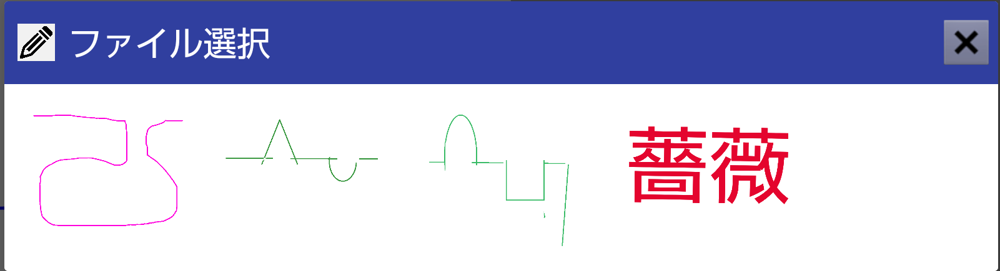

Android版リカバリーブラインの使い方

 販売価格 ￥35,000(税込)
販売価格 ￥35,000(税込)


表示した線や図形などのパターンをトレースする事で表示されている線の消し込みを行い、どれだけ消せたか（正確にトレースできたか）を評価します。

 アイコンをタップすると別のトレース元画像を選択できます。
アイコンをタップすると別のトレース元画像を選択できます。

トレース後にツールバーには左から以下の4つの表示が並びます。
-
残り（1647[ピクセル]）
- トレースによって元画像が無理つぶされ、何ピクセル残っているか
-
元画像のピクセル数（5634[ピクセル]）
- トレースのピクセル数。図の中では青い線の面積。
-
トレース線のピクセル数14845[ピクセル]）
- トレースのピクセル数。図の中では赤い線の面積。
-
ヒット率43[%]）
- トレース線がどれだけ元画像を塗りつぶしたか。
- はみ出しや、関係ない所を塗りつぶすとヒット率は下がります。
- このヒット率を塗りつぶしで得た得点に積算して最終的なスコアとします。
- 例えば残り0pxでトレース線の太さが元画像が同じならスコアは100点ですが、 トレース線の太さを２倍にすれば、ヒット率は50％になるので50点です。
この部分はトレース線が元画像に接した処で消去しますので「関係ない所を塗りつぶす」行為（ヒット率を下げる減点）には含めません。
-
起動した時の向きで固定
- スマートホンは使用中に持っている角度が変わると縦画面/横画面の表示が切り替わります。
- 表示の切り替わりが発生するとそれまでトレースしていた結果や、手書き編集中の画像データが破棄されてしまします。
- リカバリーブラインAndroidは起動時点で縦持ちなのか、横持なのかを読み取り、その向きを固定します。ですから意図しない回転でデータを失う事は有りません。
- ただし画面を切り替えた時（ドロワーメニューから呼び出すQRコードリーダーなど）から戻った時は起動状態に戻ります。
-
機能の呼び出し方も法則を持たせて、慣れやすい様に善処します。
- 状態表示が必要な物と使用頻度の多いものはtoolBarやツールパレット
- 誤操作の原因になるものや、その画面の固有機能はオプションメニュー
- 画面遷移はドロワーメニュー
- 起動時点の基本的な動作設定や使用頻度が少ない機能は設定画面（プリファレンス）
- 説明の便宜上、トレースを行う部分を「pad」、padをなぞって線を消し込む操作を「トレース」と記載します。

鏡面動作で難易度を上げましょう
同様に
 アイコンをクリックすると
アイコンをクリックすると に変化し、パッドをトレースする向きとトレースラインが書込まれる方向が左右に反転します。
に変化し、パッドをトレースする向きとトレースラインが書込まれる方向が左右に反転します。二つともタップしておけば上下左右同時に反転します。


- 左利きの方
- 利き手と反対側の手を使って難易度を上げたいとき
初期値は右がPadです。
- 設定画面「トレース設定」の「左側にPad」にチェックを入れて再起動 もしくは
- オプションメニューの「左側にPad」 （自動的に再起動されまさす）
これらの機能で「鏡越しに手元に置かれた紙に書かれた線をトレースする」などの難易度を再現します。
PCの大きな画面で

- パッドと操作部を別の端末で表示する時はインターネットに接続してWebSoket(チャットの様な仕掛け)を使います。
- 複数の方がリカバリーブラインのアプリケーションwebページ(リカバリーブラインweb)へアクセスしても動作が混在しない様「room」という概念で切り分けています。
- roomはご利用された方がリカバリーブラインweb(仮)にアクセスした日時のタイムスタンプをキーに切り分けます。
- Padを接続すると、その時点でroomで使用している線の色、太さ、先端形状をトレースの初期値として送ります。
別画面からの操作で更に難易度を上げましょう

 アイコンをクリックすると
アイコンをクリックすると リストが表示されます。
リストが表示されます。

の「接続先選択」で

を表示。

- スマートホン同士の接続もWebSoketの仕掛けを使います。
機能と使い方
- このアプリに用意した、その時使っている画面以外への遷移
- 設定画面への遷移
-
終了ボタン
- バックボタン、ホームボタンでもアプリを終了できます。
-
タイトルと差替えにスコアの根拠になるピクセル数の表示
- 残りピクセル数 / 最初のピクセル数 ; トレースで書き込まれたピクセル数；ヒット率
- アイコンをタップするとトレースした線を消し、トレース前の状態に戻します。
- toolbar右のボタンはオプションメニューを表示します。
トレース元画像
アイコンをクリックすると右の様な「定例パターン」 ダイアログが表示されます。
(web版と使い方を揃える為のカスタムIFです)


ファイルから読み込み
| サイズ | 縦横比１：１～16：9 |
幅が960pxなら高さは540px。回転可能な様に正方形をベースにする事が望ましいです。 定型パターンは540×540を基本にしています。 |
| ファイル | PINGもしくはGIF |
定型パターンは透過PINGを使っています。(背景は白でも構いません) 背景を真っ白で作成してもJPEG画像では圧縮率によってノイズが入るので好ましくありません。 |
| 線の太さ |
画面サイズはFHD(1920×1080)を基準にしています。 実際に表示されるサイズに合わせて線幅も縮小されます。 |
例えば540×540の画像読み込むと10ポイントの線幅は5ポイントになります。10ポイントに表示させるには20ポイントの線幅で描画して下さい。 |
| トレース（塗りつぶし）に使う線の太さは100%が得点できる様、切り上げ算出で少し太めに設定されます。 | ||
| 線の色 | 必ず単色にして下さい。 | 複数の色を使うと塗り面積の多い色だけが判定対象になります。 |
| できるだけ単純な色にして下さい。 | トレース（塗りつぶし）に使う色はイラストレーターのカラーパレットを参考にした補色のアルゴリズムを使っていますが、色によっては反対とは思えない色になりますのでご了承ください。 | |
-
手書きで作成
作成中；現在フリーハンドのみ
詳細は「手書きで作成で表示されるツール」をご参照ください。 -
もう一度
トレースした線を消して、評価前の状態に戻します。トレース元画像の読込みが完了した時点、もしくは作成して確定した時点でトレース元画像のピクセル配列を一旦記憶しています。「もう一度」を選択すると画面を消去して記録したピクセル配列を再度書き込みます。
作成中
-
オリジナル
変形を加えた後で元に戻します。 -
回転
表記した方形へ回転、反転を行います。- 右へ90度回転
- 左へ90度回転
- 180度回転
- 上下反転
- 左右反転
-
オリジナルにする
表示している状態を「オリジナル」として、トレース元画像を変更するまで保持します。 -
保存
表示している状態を画像ファイルにしてご利用中のPCに保存します。
「トレース元図形」の「ファイルから読込み」で再利用できます。
- YES で表示されている元画像を全消去します。
- NO で元画像を保持し、追記できる様にします。
- 「手書きで作成」へのモード切替をキャンセルする場合はタイトルバー右端のクローズボックスで閉じます。
- 「トレーズモード」へ戻る場合はツール選択セレクタの「確定」出戻ってください。
-
手書きで作成した画像を保存する場合は、トレーズモードへ戻り、「変形」の「保存」。
「作成したファイルの保存場所」に設定しているフォルダにpingで保存されます。
-
簡易なビットマップ編集ツールです。
恒久的に使うパターンや完成度を求める方にはPCなどで作成した画像を設定で確認できる「作成したファイルの保存場所」に保存して利用する事をお勧めします。 - 指の真下など、細かい所は狙えないので、基本的にフリーハンドで一筆書きするような用途でご利用ください。
- 簡恒久的に使うパターンや完成度を求める方にはPCなどで作成した画像を設定で確認できる「作成したファイルの保存場所」に保存して利用する事をお勧めします。
- ご利用の環境（スマートフォン/タブレットのOSなどの違い）でご利用できない機能も有ります。
- 制作時点で判明しているご利用できない機能についてはメニューをグレーアウト（選択不能）にしています。
ツール選択セレクタ
何を書き込むかを選択するセレクタです。-
フリーハンド
タッチの動きに合わせて線を書き込みます。 -
直線
以下の四角や円と同じく、タッチした所を始点、離した所を終点に直線を引きます。直線、三角、矩形など選択範囲に対する操作の時は、ドラッグ(タッチしたまま指を移動)している間は「範囲選択中」として選択範囲を示す黒い点線が表示されます。
-
三角
タッチした所から離した所の範囲で三角を線で描きます。
上から下に範囲選択すれば上を頂点に、下から上に範囲選択すれば下を頂点にします。 -
矩形
タッチした所を左上、離した所を右下の範囲で四角を描きます。 -
楕円
タッチした所を左上、離した所を右下の範囲に収まる円を描きます。 -
テキスト
書込む文字、フォント、サイズ、スタイルを設定して下さい。ご注意；入りきらなければカットされます。
文字のベースラインを直線を描く要領で指定して下さい。
ベースラインに合わせた角度で文字が書き込まれます。
お使いのPC、ブラウザなど実行環境に依存します。
-
消しゴム
背景と同じ白色で描いてある線を塗りつぶします。
太さは「線の太さ」、消される形状は「先端」の設定が反映されます。 -
選択範囲を消去
ドラッグした範囲にあるピクセルを白色で塗り潰します。 -
確定
「手書きで作成」する機能を終了し、書込まれたピクセルデータを読み取ります。
完了すると書込まれている（着色された部分の）ピクセル数を表示します。
線色パレット
をクリックすると線の色を設定するカラーパレットを表示します。必ず単色にして下さい。 複数の色を使うと塗り面積の多い色だけが判定対象になります。
リング部分をタップして色を選択し、四角の中で明るさを設定します。線の太さセレクタ
線の太さを設定します。細くするほど難しくなりますので、デフォルトは10ポイントにしています。
先端形状セレクタ
線の先端形状を設定します。-
丸
マウスアップしたポイントを中心に線の太さ分の円弧が描かれます。 -
四角
マウスアップしたポイントを中心に線の太さ分の四角が描かれます。 -
無し
マウスアップしたポイントまでの線が描かれます。
微小ながらマウスボタンを離したポイントから、どんなはみ出し方をするかという設置です。
鏡面動作
アイコンをタップするとに変化し、パッドをトレースする向きとトレースラインが書込まれる方向が左右に反転します。
判定 / 自動判定
自動判定モードでは画面から指を離したタイミング（タッチエンド）でスコアを算出します。
- 書き終わりまで指を離す事が無い一筆書きの時は自動判定をon
- 文字など指を離す事が有る時は自動判定をoff
変更できません
トレース設定
> トレース操作の基本設定値です-
最初に表示する元画像
- デフォルトは定例パターン01です。
-
最後に使った画像からスタート
- 終了時にその時使っている画像ファイル名を記録し、「最初に表示する元画像」を更新します。
-
以下の項目はアプリケーション起動時にon / off どちらからスタートするかを指定します。
- 上下鏡面動作
- 左右鏡面動作
- トレース後に自動判定
-
トレース線の太さ
- 元画像の線の太さ（一番多く使われてる太さを抽出）に対して、消し込みに使うトレース線の太さを何％増しにするかを指定します。
-
0%でトレース元と同じ太さ
難度は最も上がります。 - 100％でトレース元の２倍になります。
-
デフォルトは50％です。
その他の設定
-
作成したファイルの保存場所。
-
ご利用の端末で使用できる場所にこのアプリの手書き作成や、元画像の変形で作成した画像を保存します。
セキュリティの設定なので変更できない場合は、インストール時に書込める場所を検索して固定値にします。
- 基本的にシステムでその端末の画像保存エリアに設定してある「Pictures」に「Recovery_Brain」というフォルダを作成します。
- 「Pictures」が使えない場合は「DCIM」フォルダに保存します。
- ファイル名は作成日時です。
-
自動回転阻止
トレース中や手書き編集中など、画面の回転が発生してそれまで書込んだものが破棄される事を阻止します。リセットを簡単にしたい」というご要望もありますのでデフォルトはONで設定項目にしました。
-
ご利用の端末で使用できる場所にこのアプリの手書き作成や、元画像の変形で作成した画像を保存します。

更新の時は一度再インストールした方が確実です。
- 横向きで使って下さい。
- 特にインストール直後など、一枚目の元画像が表示されない時は再起動して下さい。（内蔵した画像が展開しきれていない事が有ります）
- 開発中の機能はその旨を示すアラートが表示されます。
-
対応中の項目は
-
起動処理の最適化
調整しきれていませんのでインストール時は特に時間がかかります。
このトーストが消えるまでお待ちください。 - オプションメニュー、ドロワーメニューの項目調整
- トレース線の太さ（特に文字を使うと線の太さが不均一なので元画像の正しい線の太さが取得できません）
- 次回のスタートファイル
- 英訳
-
起動処理の最適化